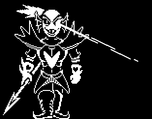

Undyne

Al entrar a Waterfall, te encuentras con Undyne, un monstruo con armadura que te impide el paso. Pero, Undyne se entera de que asesinaste a Papyrus, y quiere vengar su muerte
Te das cuenta que no podras convencerla para que te deje pasar
LUCHAR
PERDONAR